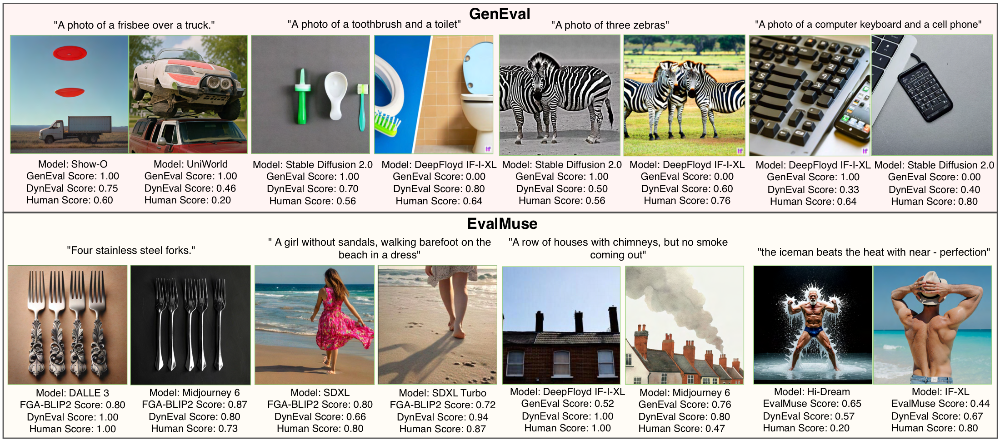
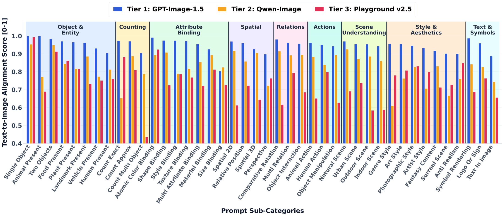
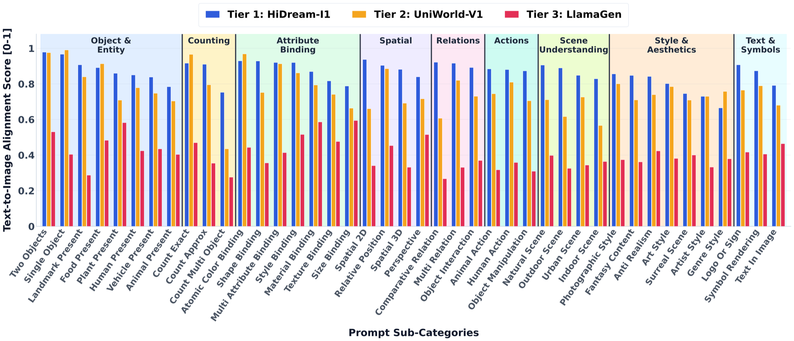

Benchmark details, prompt/model tiering, ablations, and additional qualitative/failure-analysis figures.

These supplementary examples extend the main teaser comparison between DynEval and representative T2I evaluation methods including GenEval, TIFA, DPG-Bench, and EvalMuse. All scores are normalized to [0, 1]. The examples show that semantic-alignment methods can assign similar scores to images with substantially different perceptual quality, while DynEval tracks human judgment more closely by combining text-image alignment with image quality assessment.
DynEval is evaluated on 11 benchmarks spanning compositional reasoning, attribute binding, long-form instruction following, multi-object interaction, text and symbol rendering, spatial reasoning, human preference evaluation, and fine-grained text-image alignment. Prompt length is measured in characters including whitespace and punctuation.
| Benchmark | # Prompts | # Pairs | Prompt Length Min | Max | Mean +/- Std | Images/T2I | # T2I |
|---|---|---|---|---|---|---|---|
| T2I-CoReBench | 1,080 | 4,320 | 238 | 2,064 | 764.62 +/- 324.51 | 1,080 | 4 |
| TIIF-Bench | 529 | 2,216 | 27 | 2,478 | 358.75 +/- 387.44 | 554 | 4 |
| UniGenEval++ | 600 | 3,587 | 64 | 300 | 158.60 +/- 33.81 | Mixed | 6 |
| LMM4LMM / EvalMI | 2,086 | 10,080 | 16 | 1,876 | 98.26 +/- 145.32 | 420 | 24 |
| RichHF | 493 | 955 | 4 | 1,018 | 79.31 +/- 110.69 | - | 3 |
| EvalMuse | 989 | 10,796 | 6 | 335 | 68.62 +/- 45.04 | Mixed | 20 |
| GenAI-Bench | 1,600 | 9,600 | 14 | 192 | 67.42 +/- 26.89 | 1,600 | 6 |
| TIFA | 160 | 800 | 13 | 182 | 56.13 +/- 26.90 | 160 | 5 |
| T2I-Eval-Bench | 8,772 | 8,772 | 25 | 217 | 54.19 +/- 12.54 | Mixed | 3 |
| GenEval2 | 800 | 3,200 | 13 | 93 | 50.82 +/- 18.41 | 800 | 4 |
| GenEval | 100 | 1,200 | 16 | 54 | 31.19 +/- 9.46 | 400 | 3 |
For GenEval2, TIIF-Bench, UniGenBench++, and T2I-CoReBench, the supplement describes a unified human annotation protocol. Prompts are decomposed into atomic semantic attributes, annotators label whether each attribute is satisfied, and the final human score is the average binary attribute label in [0, 1].
GenDB samples from 1.8M DiffusionDB prompts using a heuristic complexity score over nine factors: prompt length, object/attribute counts, compositional density, artist/style attribution patterns, technical rendering and fidelity terminology, explicit detail descriptors, high-level style keywords, color specifications, and interaction or relational expressions. Prompt length and object/attribute counts receive weight 0.2; the remaining seven semantic factors receive weight 0.1. Prompts shorter than 30 characters are removed.
The selected 500K prompts are divided into tiers with \(\tau_1=200\) and \(\tau_2=100\): Tier-1 hard prompts satisfy \(H(p) \ge 200\), Tier-2 medium prompts satisfy \(100 \le H(p) < 200\), and Tier-3 easy prompts fall below 100. Prompts are also categorized into 9 semantic dimensions and 42 subcategories using multi-label category assignment.
| Tier | Representative Prompts |
|---|---|
| Tier-1 | Long, compositionally rich prompts such as an astronaut-helmet portrait in the style of Norman Rockwell; a detailed office scene with a girl petting a cat; and a cinematic closeup of school friends in a ski cafe with style, fashion, and composition constraints. |
| Tier-2 | Moderate prompts such as futuristic mansion concept art, a puppet-string theater illustration, and a teddy bear in business casual clothing on a couch. |
| Tier-3 | Shorter prompts such as a sad person surrounded by books, a dark painting of a couple looking at each other, and a puffin eating pastry in a diner. |
Representative semantic categories include Object and Entity, Attribute Binding, Counting, Spatial, Relations, Actions, Scene Understanding, Text and Symbols, and Style and Aesthetics. Example subcategories include human present, animal present, atomic color binding, material binding, exact count, 2D spatial relation, object interaction, text in image, logo/sign rendering, fantasy content, and surreal scene.
DynEval uses 36 T2I models spanning 2022-2026, including early diffusion models, diffusion transformers, autoregressive image generation models, unified multimodal generators, recent open-source foundation models, and closed-source systems. Each model is evaluated on DynEval-1K, which contains 1,000 prompts covering 42 subcategories across 9 semantic dimensions.
| Tier | Average +/- Std | Models and DynEval Scores |
|---|---|---|
| Tier-1 | 0.872 +/- 0.041 | GPT-Image-1.5 0.934; NanoBanana 0.915; FLUX.2-klein 0.883; FLUX.2-dev 0.866; FIBO 0.844; LongCat-Image 0.834; HiDream-I1 0.830. |
| Tier-2 | 0.739 +/- 0.039 | Qwen-Image 0.793; Z-Image 0.789; GLM-Image 0.780; FLUX.1-dev 0.776; Sana 0.769; UniPic 0.768; Stable Diffusion 3.5 0.767; OmniGen2 0.765; In-Context LoRA 0.757; Bagel 0.755; OmniGen 0.741; Hunyuan-DiT 0.727; Show-o 0.711; X-Omni 0.706; Janus-Pro 0.696; Kolors 0.689; PixArt-alpha 0.685; Kandinsky 3 0.683; UniWorld-V1 0.682. |
| Tier-3 | 0.528 +/- 0.123 | Playground v2.5 0.655; SSD-1B 0.613; DeepFloyd IF-XL 0.609; Emu3 0.597; SDXL-Turbo 0.594; Stable Diffusion XL 0.553; Stable Diffusion v2.1 0.523; Stable Diffusion v1.5 0.475; PixArt-sigma 0.425; LlamaGen 0.240. |
Tiering supports tier-matched GenDB construction: Tier-1 models are paired with hard prompts, Tier-2 with medium prompts, and Tier-3 with easy prompts. This avoids wasting compute on trivially good outputs from strong models or catastrophic outputs from weak models on overly hard prompts, and produces richer failure cases for evaluator training.
Teacher-generated T2IA and IQA scores are combined as \(S = 0.5 S_{\mathrm{T2IA}} + 0.5 S_{\mathrm{IQA}}\). Although the curation framework supports tier-specific thresholds \(\delta_i\), the implementation sets \(\delta_1=\delta_2=\delta_3=5\). Since 5 is the maximum possible score, this removes only near-perfect examples and retains samples with semantic, compositional, or perceptual discrepancies. Applying this filter to GenDB yields the final 250K DynEvalInstruct dataset.
The supplement selects the teacher by preferring a stricter evaluator on DynEval-1K. Lower scores indicate more willingness to penalize flawed generations. Qwen3-VL-235B is selected as the teacher because it provides the strongest strict-evaluator behavior among the considered candidates.
| Teacher Candidate | DynEval Score |
|---|---|
| GPT-5.2 | 0.863 +/- 0.216 |
| Qwen3-VL-235B | 0.850 +/- 0.192 |
| Qwen2.5-VL-32B | 0.929 +/- 0.076 |
| InternVL-241B | 0.900 +/- 0.100 |
| InternVL-78B | 0.920 +/- 0.084 |
| Qwen3-VL-4B-Instruct | 0.871 +/- 0.236 |
| Qwen3-VL-8B-Instruct | 0.971 +/- 0.076 |
| DynEvalInstruct Training Data | SRCC |
|---|---|
| 50K | 0.687 +/- 0.225 |
| 100K | 0.700 +/- 0.178 |
| 150K | 0.750 +/- 0.065 |
| 200K | 0.790 +/- 0.100 |
| 250K | 0.800 +/- 0.025 |
SRCC improves consistently with more training data and begins to saturate around 250K samples, matching the selected DynEvalInstruct size.

Best-performing models from each tier are GPT-Image-1.5, Qwen-Image, and Playground v2.5. Even these models show noticeable weaknesses on challenging subcategories such as human present, count multi objects, size binding, perspective, anti-realism, and text in image.

Worst-performing models from each tier are HiDream-I1, UniWorld-V1, and LlamaGen. The failure patterns are broader and more severe, but exact counting, perspective reasoning, and text rendering remain consistently difficult regardless of overall tier strength.
@misc{marjit2026dynevalholisticevaluationst2i,
title={DynEval: Holistic Evaluations of T2I Generative Models in the Wild},
author={Shyam Marjit and Dheeraj Baiju and Anuj Shikarkhane and Akhil Sakthieswaran and Sayak Paul and Anirban Chakraborty},
year={2026},
eprint={2607.11199},
archivePrefix={arXiv},
primaryClass={cs.CV},
url={https://arxiv.org/abs/2607.11199},
}